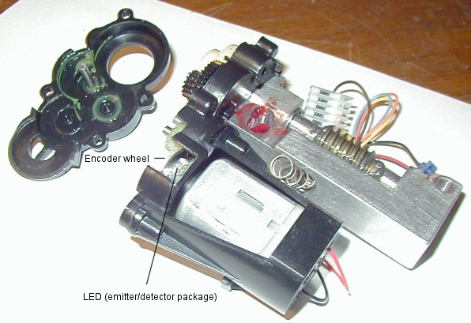

Removing the Worm Assembly and cleaning the Encoders Before you can remove the worm block, motor and gearbox assembly, you need to follow through the instructions for removing the right side cover, or dis-assembling the base depending on which worm assembly you need to work on/clean/replace. Once you have the cover removed, cable connectors marked and set out of the way, you can continue with the worm assembly removal. This page shows the declination worm only. The RA worm assembly is slightly different, however the same procedure would still apply. If you just need to clean grease that you can see off of the encoder, try to clean it while still mounted on the fork arm. The RA worm is harder to get at, and will probably require removal from the base.
All that holds the assembly in place are the two slot head bolts on the worm block. Make a drawing of the connectors to the drive board, noting the position of the connector and the colors of the wires in relation to the board. You'll need these for reassembly. If you connect the cables improperly, damage could result. Once the two cables are free, you can remove the pivot screws. I removed the slotted one (on the lower left) first, then removed the upper right screw. There may be spacers behind and/or between the block and screws or the aluminum fork, so be careful when you remove the screws. Remember which screw goes where, mark them if needed. A second thing to watch for is the pivot spring. There's quite a bit of pressure on it. I used a machinists rule (A very thin, stainless rule) slipped under the spring, then slid the whole assembly off the fork. The same technique was used when re-assembling - the spring was compressed, then the assembly was slid back into position. Once you have the worm block removed, place it on a clean sheet of paper or cloth. Have a small plastic cup handy to keep the screws in (so they don't get lost). Have some all temperature grease readily available for re-assembly. The first thing I did was to clean off the worm itself. Using cotton swaps, I cleaned the entire brass worm until it was free of all grease and any dirt or metal particles. I then checked the pin on the worm, to make sure the worm was secured properly to the shaft.
After cleaning and inspecting the worm, the gearbox cover can be removed. Mine was very tight, and required the use of a thin, flat bladed exacto knife to lightly put presssure between the two halves. After a little persuasion, the two halves came right apart. Two things to watch for here - One black gear is supported by a shaft secured to the outside cover, so be carefull you don't lose this gear when you open the housing. Secondly, be very carefull around the encoder wheel and IR emitter-detector, there is a small circuit board there holding the assembly, and the encoder wheel itself can be scratched or damaged by tools. A note here. There's a small access window to the encoder wheel and IR emitter-detector. It may be enough room for you to clean any grease out that's accumulated there. If you need to access the gearbox for any reason, or if you can't get at the grease that migrated towards the bottom, continue on. Otherwise you can just skip down to the section on cleaning.
Remove the four screws holding the outside half of the housing to the inner half. Separate the two halfs, and set the screws safely aside.
With the outer cover removed, you can inspect the gears for any damage. Broken teeth, foreign objects in the grease, etc, should be replaced. If you have broken gears, you may be better off calling Meade for a full replacement assembly. Damaged gears could also mean a damaged motor or bent shafts, neither of which will do you any good. After inspecting the gearbox, you can turn your attention to the encoder wheel and IR emitter-detector. One side of the encoder wheel has radial stripes facing the LED package. These are strobe marks used for timing and positioning. The encoder wheel itself seems to be a two piece assembly. Be very careful not to mar or scratch the inner side (the marks facing the motor) while cleaning. I used cotton swabs to clean any grease away from the encoder and LED package, then used a final swab soaked in plastic-safe contact cleaner to finish up. Do NOT attempt to rotate the encoder wheel, as it's secured to the motor shaft. If you break it loose, the encoder will NOT work properly. Clean around the encoder area without trying to move any of the parts. Clean the outer cover in the area of the encoder. After everything is dry, blow out any residual dust or cotton. This area should be as clean as possible, and dry before re-assembling.  The encoder works by detecting reflected light pulses from the encoder wheel. One side of the electronics package is an infrared LED that shines on the encoder wheel. On the other side of the package is a detector, that "sees" the flashes from the reflective and non-reflective sections on the encoder wheel. The circuitry then "counts" the pulses generated from the assembly. You can see that any grease in this area will cause problems. Grease on the LED side will inhibit light to the encoder wheel, grease on the encoder will obscure the separate reflective and non-reflective surfaces; and grease on the detector side will inhibit the proper reading of reflected light pulses. Once you have the assembly cleaned/repaired/regreased, you can reassemble the components in reverse order. Make sure the shafts and gears line up correctly. Don't force any parts back together. Don't overtighten the four screws holding the outer cover on the gearbox. Slightly tight is fine, too much and you'll crack either housing. For more information on getting to the worm blocks for removal, see the Declination Axis page, and the RA axis page. || Back
to Contents || Wedge
adapter || Focuser
|| Azimuth
adjuster || Weight
Set || Dovetail
|| |